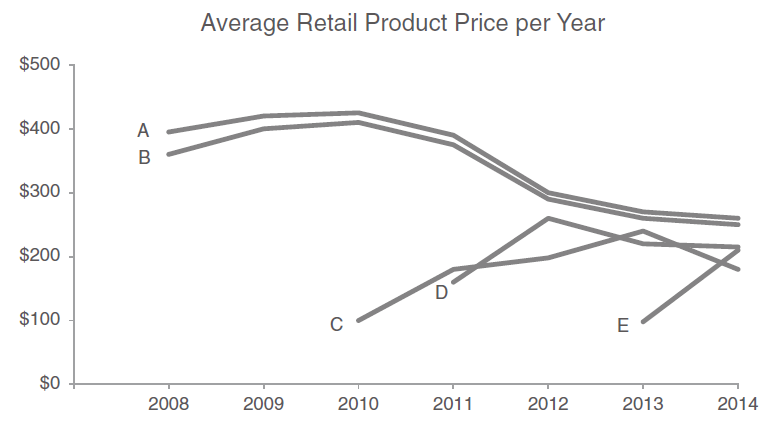
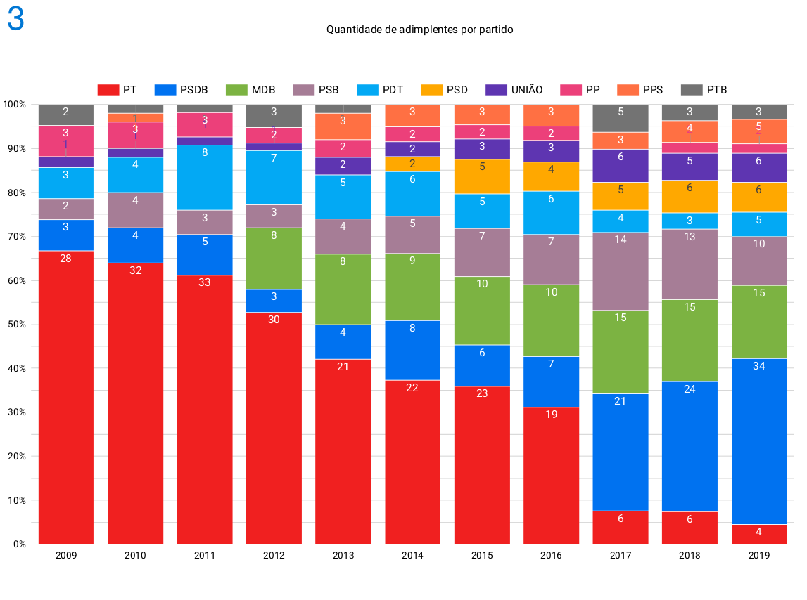

| Grande Região | Trimestre | Grupo de idade | Rendimento | Horas |
|---|---|---|---|---|
| Norte | 4º trimestre 2019 | Total | 2144 | 36.9 |
| Norte | 4º trimestre 2019 | 14 a 17 anos | 555 | 24.7 |
| Norte | 4º trimestre 2019 | 18 a 24 anos | 1263 | 36.0 |
| Norte | 4º trimestre 2019 | 25 a 39 anos | 2081 | 37.6 |
| Norte | 4º trimestre 2019 | 40 a 59 anos | 2494 | 37.5 |
| Norte | 4º trimestre 2019 | 60 anos ou mais | 2746 | 35.0 |
| Nordeste | 4º trimestre 2019 | Total | 1965 | 36.9 |
| Nordeste | 4º trimestre 2019 | 14 a 17 anos | 468 | 23.9 |
| Nordeste | 4º trimestre 2019 | 18 a 24 anos | 1071 | 35.3 |
| Nordeste | 4º trimestre 2019 | 25 a 39 anos | 1964 | 37.7 |
| Nordeste | 4º trimestre 2019 | 40 a 59 anos | 2203 | 37.3 |
| Nordeste | 4º trimestre 2019 | 60 anos ou mais | 2609 | 34.6 |
| Sudeste | 4º trimestre 2019 | Total | 3276 | 40.1 |
| Sudeste | 4º trimestre 2019 | 14 a 17 anos | 773 | 26.1 |
| Sudeste | 4º trimestre 2019 | 18 a 24 anos | 1659 | 38.9 |
| Sudeste | 4º trimestre 2019 | 25 a 39 anos | 3284 | 41.1 |
| Sudeste | 4º trimestre 2019 | 40 a 59 anos | 3734 | 40.7 |
| Sudeste | 4º trimestre 2019 | 60 anos ou mais | 3965 | 36.9 |
| Sul | 4º trimestre 2019 | Total | 3175 | 40.1 |
| Sul | 4º trimestre 2019 | 14 a 17 anos | 947 | 27.3 |
| Sul | 4º trimestre 2019 | 18 a 24 anos | 1834 | 39.3 |
| Sul | 4º trimestre 2019 | 25 a 39 anos | 3111 | 41.1 |
| Sul | 4º trimestre 2019 | 40 a 59 anos | 3706 | 40.7 |
| Sul | 4º trimestre 2019 | 60 anos ou mais | 3792 | 36.7 |
| Centro-Oeste | 4º trimestre 2019 | Total | 3165 | 39.7 |
| Centro-Oeste | 4º trimestre 2019 | 14 a 17 anos | 847 | 28.0 |
| Centro-Oeste | 4º trimestre 2019 | 18 a 24 anos | 1719 | 39.4 |
| Centro-Oeste | 4º trimestre 2019 | 25 a 39 anos | 3178 | 40.4 |
| Centro-Oeste | 4º trimestre 2019 | 40 a 59 anos | 3681 | 40.1 |
| Centro-Oeste | 4º trimestre 2019 | 60 anos ou mais | 3672 | 37.3 |
Conhecendo Gráficos
Como apresentar ideias por meio de imagens simples e completas
Gráfico eficiente
Ao final, espero que sejamos capazes de:
- Identificar as informações apresentadas em gráficos
- Contar histórias com os dados (números) para determinado público
- Apresentar dados de forma eficiente
O que trataremos
13/01/2023
- Razões para se ocupar com visualização de dados
- Relações entre tabelas e gráficos
- Elementos de um bom gráfico
27/01/2023
- Análise da qualidade dos gráficos
- Avaliar os erros mais comuns
- Apresentar soluções para tais erros
Combate à cólera na Inglaterra

“Bad air” John Snow (1813–1858), Father of Epidemiology. Veja mais em: Mala Deep.
Escravidão nos EUA
1860 Census, used by President Abraham Lincoln, according to Francis Bicknell Carpenter. Veja mais em: Mala Deep.
Escravidão nos EUA
First Reading of the Emancipation Proclamation of President Lincoln, painted by Francis Bicknell Carpenter. Veja mais em: Mala Deep.
O que acham destes gráficos?
Probabilidade de morrer (por sexo)
Veja mais em: Pointless Graphs
Proporção de cada letra do alfabeto
Veja mais em: Pointless Graphs
Mapa-múndi se o nível dos oceanos subir 10.000 metros
Veja mais em: Pointless Graphs
Planetas no sistema solar

Veja mais em: Pointless Graphs
Anos desde 1990
Veja mais em: Pointless Graphs
Por que apresentar dados?
Nem tudo precisa de um gráfico
“A cafeteria da empresa foi usada por 9 em cada 10 empregados durante o ano fiscal de 1949”

Veja mais em: Ross Ihaka
Entendendo o contexto
- Análise exploratória vs explanatória
Veja mais em: Cole Nussbaumer Knaflic. Storytelling with Data.
Entendendo o contexto
- Análise exploratória vs explanatória
- Reflita sobre para quem
Veja mais em: Cole Nussbaumer Knaflic. Storytelling with Data.
Entendendo o contexto
- Análise exploratória vs explanatória
- Reflita sobre para quem, o que
Veja mais em: Cole Nussbaumer Knaflic. Storytelling with Data.
Entendendo o contexto
- Análise exploratória vs explanatória
- Reflita sobre para quem, o que e como planeja apresentar as informações
Veja mais em: Cole Nussbaumer Knaflic. Storytelling with Data.
Entendendo o contexto
- Análise exploratória vs explanatória
- Reflita sobre para quem, o que e como planeja apresentar as informações
- Tenha uma ideia em 3 minutos (e uma frase-chave) do que pretende alcançar
Veja mais em: Cole Nussbaumer Knaflic. Storytelling with Data.
Por que usar gráficos?
Um bom gráfico pode
- Tornar a compreensão dos dados mais simples
- Enfatizar dados em meio a um caos de informações
- Contar uma história simples e autêntica
Simplificando tabelas
Enfatizar dados em meio a um caos de informações (1/2)
Perceba os elementos pré-atentivos. Veja mais em: Polymer
Enfatizar dados em meio a um caos de informações (1/2)
Enfatizar dados em meio a um caos de informações (2/2)
Enfatizar dados em meio a um caos de informações (2/2)
Veja mais em: Cole Nussbaumer Knaflic. Storytelling with Data.
Contar uma história (1/2)
Contar uma história (2/2)
Tendência de processamento de tickets

Veja mais em: StorytellingData
Diretrizes para um bom gráfico
Os gráficos devem seguir as seguintes diretrizes:
- Chamar a atenção para o que é importante nos seus dados (as pessoas procuram os destaques e diferenças em primeiro lugar)
- Simplificar e reduzir as informações periféricas
- Identificar as hierarquias dos dados e refletí-las nos gráficos
Chamar a atenção para o que é importante
Veja mais em: The Economist
Reduzir as informações periféricas
Veja mais em: Ross Ihaka e Polymer
Hierarquias dos dados

De onde vêm os gráficos?
Dados de tabelas (1/3)
| Grupo de idade | Desocupação (%) |
|---|---|
| 14 a 17 anos | 42.6 |
| 18 a 24 anos | 20.2 |
| 25 a 39 anos | 8.1 |
| 40 a 59 anos | 4.7 |
| 60 anos ou mais | 3.8 |

Dados de tabelas (2/3)
| Grupo de idade | Desocupação (%) |
|---|---|
| 14 a 17 anos | 42.6 |
| 18 a 24 anos | 20.2 |
| 25 a 39 anos | 8.1 |
| 40 a 59 anos | 4.7 |
| 60 anos ou mais | 3.8 |
Dados de tabelas (3/3)
| Grupo de idade | Desocupação (%) |
|---|---|
| 14 a 17 anos | 42.6 |
| 18 a 24 anos | 20.2 |
| 25 a 39 anos | 8.1 |
| 40 a 59 anos | 4.7 |
| 60 anos ou mais | 3.8 |
3 variáveis (1/3)
| Grupo de idade | Desocupação (%) | Grande Região |
|---|---|---|
| 60 anos ou mais | 4.9 | Sudeste |
| 40 a 59 anos | 7.0 | Sudeste |
| 25 a 39 anos | 10.3 | Sudeste |
| 18 a 24 anos | 24.0 | Sudeste |
| 14 a 17 anos | 45.8 | Sudeste |
| 60 anos ou mais | 3.0 | Sul |
| 40 a 59 anos | 3.8 | Sul |
| 25 a 39 anos | 5.5 | Sul |
| 18 a 24 anos | 14.8 | Sul |
| 14 a 17 anos | 34.5 | Sul |
3 variáveis (2/3)
| Grupo de idade | Desocupação (%) | Grande Região |
|---|---|---|
| 60 anos ou mais | 4.9 | Sudeste |
| 40 a 59 anos | 7.0 | Sudeste |
| 25 a 39 anos | 10.3 | Sudeste |
| 18 a 24 anos | 24.0 | Sudeste |
| 14 a 17 anos | 45.8 | Sudeste |
| 60 anos ou mais | 3.0 | Sul |
| 40 a 59 anos | 3.8 | Sul |
| 25 a 39 anos | 5.5 | Sul |
| 18 a 24 anos | 14.8 | Sul |
| 14 a 17 anos | 34.5 | Sul |
3 variáveis (3/3)
| Grupo de idade | Desocupação (%) | Grande Região |
|---|---|---|
| 60 anos ou mais | 4.9 | Sudeste |
| 40 a 59 anos | 7.0 | Sudeste |
| 25 a 39 anos | 10.3 | Sudeste |
| 18 a 24 anos | 24.0 | Sudeste |
| 14 a 17 anos | 45.8 | Sudeste |
| 60 anos ou mais | 3.0 | Sul |
| 40 a 59 anos | 3.8 | Sul |
| 25 a 39 anos | 5.5 | Sul |
| 18 a 24 anos | 14.8 | Sul |
| 14 a 17 anos | 34.5 | Sul |

Forma organizada
| Grupo de idade | Desocupação (%) | Grande Região |
|---|---|---|
| 60 anos ou mais | 4.9 | Sudeste |
| 40 a 59 anos | 7.0 | Sudeste |
| 25 a 39 anos | 10.3 | Sudeste |
| 18 a 24 anos | 24.0 | Sudeste |
| 14 a 17 anos | 45.8 | Sudeste |
| 60 anos ou mais | 3.0 | Sul |
| 40 a 59 anos | 3.8 | Sul |
| 25 a 39 anos | 5.5 | Sul |
| 18 a 24 anos | 14.8 | Sul |
| 14 a 17 anos | 34.5 | Sul |
Forma desorganizada (1/2)
| Grande Região | 60 anos ou mais | 40 a 59 anos | 25 a 39 anos | 18 a 24 anos | 14 a 17 anos |
|---|---|---|---|---|---|
| Sudeste | 4.9 | 7.0 | 10.3 | 24.0 | 45.8 |
| Sul | 3.0 | 3.8 | 5.5 | 14.8 | 34.5 |
Forma desorganizada (2/2)
| Grupo de idade | Sudeste | Sul |
|---|---|---|
| 60 anos ou mais | 4.9 | 3.0 |
| 40 a 59 anos | 7.0 | 3.8 |
| 25 a 39 anos | 10.3 | 5.5 |
| 18 a 24 anos | 24.0 | 14.8 |
| 14 a 17 anos | 45.8 | 34.5 |
3 variáveis (de novo!)
| Grupo de idade | Desocupação (%) | Grande Região |
|---|---|---|
| 60 anos ou mais | 4.9 | Sudeste |
| 40 a 59 anos | 7.0 | Sudeste |
| 25 a 39 anos | 10.3 | Sudeste |
| 18 a 24 anos | 24.0 | Sudeste |
| 14 a 17 anos | 45.8 | Sudeste |
| 60 anos ou mais | 3.0 | Sul |
| 40 a 59 anos | 3.8 | Sul |
| 25 a 39 anos | 5.5 | Sul |
| 18 a 24 anos | 14.8 | Sul |
| 14 a 17 anos | 34.5 | Sul |
Simplificando tabelas (de novo!)
| Grande Região | Trimestre | Grupo de idade | Rendimento | Horas |
|---|---|---|---|---|
| Norte | 4º trimestre 2019 | Total | 2144 | 36.9 |
| Norte | 4º trimestre 2019 | 14 a 17 anos | 555 | 24.7 |
| Norte | 4º trimestre 2019 | 18 a 24 anos | 1263 | 36.0 |
| Norte | 4º trimestre 2019 | 25 a 39 anos | 2081 | 37.6 |
| Norte | 4º trimestre 2019 | 40 a 59 anos | 2494 | 37.5 |
| Norte | 4º trimestre 2019 | 60 anos ou mais | 2746 | 35.0 |
| Nordeste | 4º trimestre 2019 | Total | 1965 | 36.9 |
| Nordeste | 4º trimestre 2019 | 14 a 17 anos | 468 | 23.9 |
| Nordeste | 4º trimestre 2019 | 18 a 24 anos | 1071 | 35.3 |
| Nordeste | 4º trimestre 2019 | 25 a 39 anos | 1964 | 37.7 |
| Nordeste | 4º trimestre 2019 | 40 a 59 anos | 2203 | 37.3 |
| Nordeste | 4º trimestre 2019 | 60 anos ou mais | 2609 | 34.6 |
| Sudeste | 4º trimestre 2019 | Total | 3276 | 40.1 |
| Sudeste | 4º trimestre 2019 | 14 a 17 anos | 773 | 26.1 |
| Sudeste | 4º trimestre 2019 | 18 a 24 anos | 1659 | 38.9 |
| Sudeste | 4º trimestre 2019 | 25 a 39 anos | 3284 | 41.1 |
| Sudeste | 4º trimestre 2019 | 40 a 59 anos | 3734 | 40.7 |
| Sudeste | 4º trimestre 2019 | 60 anos ou mais | 3965 | 36.9 |
| Sul | 4º trimestre 2019 | Total | 3175 | 40.1 |
| Sul | 4º trimestre 2019 | 14 a 17 anos | 947 | 27.3 |
| Sul | 4º trimestre 2019 | 18 a 24 anos | 1834 | 39.3 |
| Sul | 4º trimestre 2019 | 25 a 39 anos | 3111 | 41.1 |
| Sul | 4º trimestre 2019 | 40 a 59 anos | 3706 | 40.7 |
| Sul | 4º trimestre 2019 | 60 anos ou mais | 3792 | 36.7 |
| Centro-Oeste | 4º trimestre 2019 | Total | 3165 | 39.7 |
| Centro-Oeste | 4º trimestre 2019 | 14 a 17 anos | 847 | 28.0 |
| Centro-Oeste | 4º trimestre 2019 | 18 a 24 anos | 1719 | 39.4 |
| Centro-Oeste | 4º trimestre 2019 | 25 a 39 anos | 3178 | 40.4 |
| Centro-Oeste | 4º trimestre 2019 | 40 a 59 anos | 3681 | 40.1 |
| Centro-Oeste | 4º trimestre 2019 | 60 anos ou mais | 3672 | 37.3 |
Para nosso próximo encontro
Gráficos a todo instante
Na próxima semana, salvem os gráficos que virem.

Usaremos como material de análise para a próxima semana!
Gráficos em casa

Diretrizes gerais e problemas comuns
Revisão do primeiro episódio (diretrizes gerais)
- Entenda o contexto (quem, o que e como?)
- Escolha o formato apropriado de apresentação
- Elimite todo o excesso de informação
- Chame atenção para o que você deseja enfatizar
- Conte uma história completa
“Eu teria escrito uma carta mais curta, mas não tive tempo.”
Blaise Pascal
Eu teria feito um gráfico mais simples, mas não tive tempo.
Use elementos pré-atentivos
Veja mais em: Cole Nussbaumer Knaflic. Storytelling with Data.
Use elementos pré-atentivos
Veja mais em: Cole Nussbaumer Knaflic. Storytelling with Data.
Tipos de gráficos
Gráfico de dispersão (de pontos)
Gráfico de dispersão conectado
Gráfico de linhas
Veja mais: DataViz
Gráfico de barras
Gráfico de área empilhada
Veja mais em https://engenheiradoexcel.com.br/grafico-de-linha-no-excel/
Mapa coroplético

Veja mais em Verbete Wikipedia
Mapa de bolhas

Veja mais em https://wgicouncil.org/blogs/new-who-covid-19-maps-dashboard/
Gráfico de pizza

Veja mais em Excel Easy
Ferramenta de consulta
Principais problemas
Gráfico pontos conectados (errado)

Learn more: Posgraduando
Gráfico correto

Learn more: Posgraduando
Barras que não começam do zero
Veja mais em: Cole Nussbaumer Knaflic. Storytelling with Data.
Linha que não começa do zero

Learn more: Posgraduando
Linha que não começa do zero

Learn more: Posgraduando
Gráficos de área enganam pessoas

Learn more: Venngage
Onde está o erro?

Gráfico de áreas de círculos
Veja mais em: DataViz
Gráfico em 3D
Veja mais em: Podfeet Podcasts
Gráfico em 3D
Veja mais em: DataViz
Nenhum gráfico fica bom se a informação é dúbia

Veja mais em: Ross Ihaka
Gráfico mais complexo que sua fonte
Estudantes do EM com mais de 25 anos

Veja mais em: Ross Ihaka
Learn more: Tabsets
Não se deve distorcer informações

Veja mais em: Ross Ihaka
Excesso de criatividade

Learn more: Venngage
Exemplo prático
Todo o exemplo foi baseado em Cole Nussbaumer Knaflic. Storytelling with Data: A Data Visualization Guide for Business Professionals
Título orignal: O preço de todos os produtos caíram desde o lançamento do produto C em 2010
Entenda o contexto
- Quem? Vice-presidente de produtos, que decidirá o preço.
- O que? Entender como o preço dos competidores evoluiu e sugerir um intervalo de preços.
- Como? Mostrar a evolução dos preços médios dos produtos ao longo do tempo.
Formato apropriado de apresentação
Formato apropriado de apresentação
Formato apropriado de apresentação
Formato apropriado de apresentação
Formato apropriado de apresentação
Formato apropriado de apresentação
Formato apropriado de apresentação
Formato apropriado de apresentação
Eliminar todo excesso

Eliminar todo excesso
Chamar atenção para o que você deseja enfatizar
Chamar atenção para o que você deseja enfatizar
Chamar atenção para o que você deseja enfatizar
Chamar atenção para o que você deseja enfatizar
Chamar atenção para o que você deseja enfatizar
Chamar atenção para o que você deseja enfatizar
Contar uma história completa
AVG = 231
Antes e depois
AVG = 231
Casos concretos de vocês


Notas conclusivas
Gráfico eficiente
- Conta uma história com início, meio e fim;
- Todos elementos têm um objetivo;
- Possui sentido completo; e
- Ajuda a convencer quem o lê.
Como consultar sobre gráficos
Referências úteis
Muito obrigado!